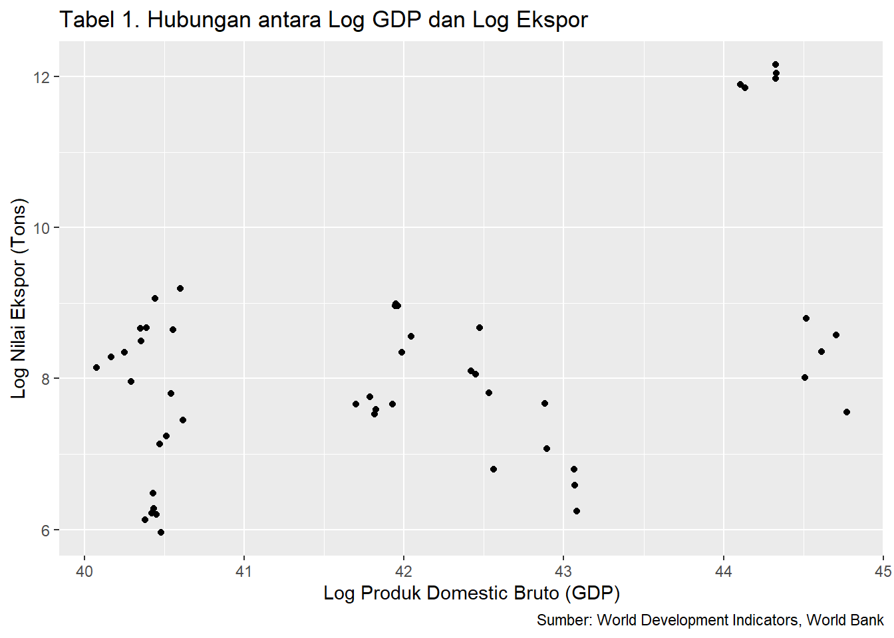
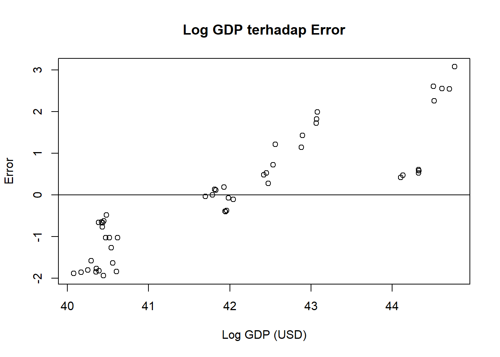
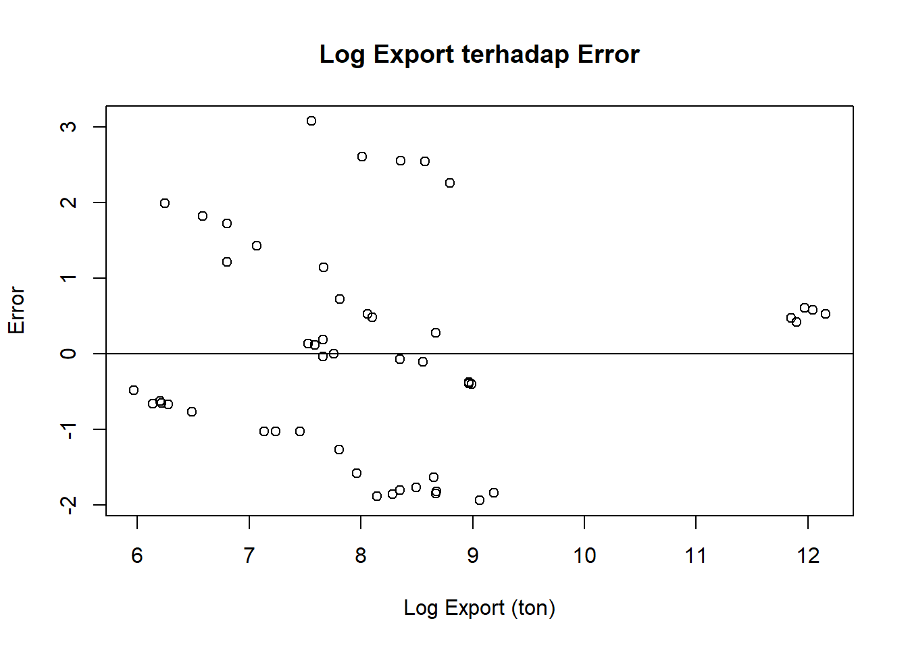

library(tidyverse)
library(kableExtra)
library(ggplot2)
library(dplyr)
library(readxl)
library(WDI)Pengaruh Gross Domestic Product (GDP) terhadap Volume Ekspor Rumput Laut Indonesia ke 10 Negara Tujuan Utama Tahun 2019-2023
Metode Penelitian Politeknik APP Jakarta

1 Pendahuluan
1.1 Latar belakang
Indonesia merupakan salah satu produsen rumput laut terbesar di dunia, dengan pasar ekspor yang tersebar di berbagai negara. Rumput laut tidak hanya menjadi komoditas unggulan, tetapi juga sumber devisa yang penting bagi negara. 10 Negara tujuan utama ekspor rumput laut di antaranya China, Viet Nam, Chile, Korea Selatan, Japan, Spain, Amerika Serikat, Filipina, Perancis, dan Hong Kong.
Penulis tertarik melihat ekspor rumput laut karena, rumput laut saat ini merupakan salah satu komoditas yang memiliki nilai ekonomi tinggi mengingat perannya yang sangat penting dalam berbagai produk yang berhubungan dengan kehidupan sehari-hari. Misalnya sebagai bahan makanan seperti agar-agar, sayuran, kue dan menghasilkan bahan algin, karaginan dan fulcelaran yang digunakan dalam industri farmasi, kosmetik, dan tekstil. Penelitian ini bertujuan untuk memahami bagaimana GDP negara tujuan dan harga rumput laut memengaruhi volume ekspor Indonesia ke 10 negara utama dalam periode 2019-2023.
1.2 Ruang lingkup
Penelitian ini menggunakan data yang diambil dari World Development Indicators, World Bank dan Trademap.org. Penelitian ini terdapat 2 variabel yaitu GDP dari 10 negara tujuan utama ekspor rumput laut Indonesia (China, Viet Nam, Chile, Korea Selatan, Japan, Spain, Amerika Serikat, Filipina, Perancis, dan Hong Kong) dalam USD dan ekspor rumput laut dalam satuan ton. Data yang digunakan adalah data yang bersifat time series yaitu dalam kurun waktu 2019-2023. Ekspor rumput laut sendiri data yang digunakan adalah rumput laut dengan hs code 121221. Metode analisis yang digunakan adalah regresi linier sederhana (OLS).
1.3 Rumusan masalah
Berdasarkan uraian latar belakang diatas maka yang menjadi masalah pokok pada penelitian ini adalah: 1. Bagaimana hubungan antara GDP negara tujuan dan volume ekspor rumput laut Indonesia? 2. Apakah GDP negara tujuan secara signifikan memengaruhi volume ekspor rumput laut Indonesia?
1.4 Tujuan dan manfaat penelitian
Penelitian ini bertujuan untuk: 1. Mengetahui hubungan antara GDP negara tujuan dengan volume ekspor rumput laut Indonesia. 2. Menganalisis pengaruh GDP terhadap volume ekspor rumput laut Indonesia ke 10 negara tujuan utama.
3. Mengidentifikasi sejauh mana GDP memengaruhi ekspor ke masing-masing negara. 4. Memberikan rekomendasi strategis kepada pelaku industri dan pembuat kebijakan untuk meningkatkan daya saing ekspor rumput laut.
1.5 Package
Packages yang digunakan antara lain sebagai berikut:
2 Studi pustaka
Rumput laut adalah salah satu tumbuhan laut yang tergolong dalam makroalga benthik yang banyak hidup melekat di dasar perairan (Atillah & Gischa, 2023). Di banyak negara termasuk Indonesia, rumput laut saat ini merupakan salah satu komoditas yang memiliki nilai ekonomi tinggi mengingat perannya yang sangat penting dalam berbagai produk yang berhubungan dengan kehidupan sehari-hari. Misalnya sebagai bahan makanan seperti agar-agar, sayuran, kue dan menghasilkan bahan algin, karaginan dan fulcelaran yang digunakan dalam industri farmasi, kosmetik, dan tekstil. (Salim, 2015)
Menurut (Saputra, 2024), telah berbagai faktor yang mempengaruhi volume ekspor rumput laut Indonesia. Penelitian ini menunjukkan bahwa faktor-faktor seperti permintaan pasar, harga internasional, dan kebijakan pemerintah berperan signifikan dalam menentukan volume ekspor. Penelitian ini juga menekankan pentingnya diversifikasi pasar untuk meningkatkan daya saing ekspor rumput laut Indonesia di pasar global.
Literature berikutnya adalah buku yang disunting oleh Zamroni Salim, Ph.D dan Ernawati, Ph.D (2015) ini memberikan informasi komprehensif mengenai rumput laut sebagai komoditas ekspor. Dalam buku ini, dijelaskan bahwa rumput laut memiliki berbagai manfaat, baik untuk industri makanan, kosmetik, maupun farmasi. Selain itu, buku ini juga membahas potensi pasar rumput laut di luar negeri dan tantangan yang dihadapi oleh Indonesia dalam meningkatkan volume ekspor.
Menurut (Arthatiani et al., 2021) mengkaji dampak pandemi terhadap kinerja ekspor rumput laut. Penelitian ini menunjukkan bahwa meskipun terjadi penurunan permintaan global, sektor rumput laut tetap memiliki peluang untuk berkembang jika didukung oleh kebijakan yang tepat.
Menurut (Simanjuntak et al., n.d.) meneliti bagaimana faktor-faktor Produksi, Harga Internasional dan Nilai Tukar Rupiah mempengaruhi volume ekspor. Hasil penelitian menunjukkan bahwa produksi rumput laut dan nilai tukar memiliki pengaruh signifikan terhadap volume ekspor, sementara harga internasional tidak memberikan dampak yang konsisten.
Penelitian-penelitian tersebut memberikan dasar yang kuat untuk memahami dinamika ekspor rumput laut dan pentingnya strategi yang tepat untuk meningkatkan kinerja ekspor di masa depan.
3 Metode penelitian
3.1 Data
Berikut adalah data yang digunakan sebagai objek penelitian, data dibawah ini merupakan data nilai ekspor dalam satuan ton, GDP dalam satuan USD, serta data export dan gdp setelah transformasi log.
| Tahun | Negara | Export | GDP | lexport | lgdp |
|---|---|---|---|---|---|
| 2019 | China | 146710 | 1.427997e+19 | 11.896213 | 44.10539 |
| 2019 | Viet Nam | 5816 | 3.343653e+17 | 8.668368 | 40.35101 |
| 2019 | Chile | 3952 | 2.782851e+17 | 8.281977 | 40.16742 |
| 2019 | Korea, Republic of | 8042 | 1.651423e+18 | 8.992433 | 41.94817 |
| 2019 | Japan | 515 | 5.117994e+18 | 6.244167 | 43.07929 |
| 2019 | Spain | 2336 | 1.403496e+18 | 7.756195 | 41.78550 |
| 2019 | United States of America | 6629 | 2.153998e+19 | 8.799209 | 44.51644 |
| 2019 | Philippines | 1254 | 3.768234e+17 | 7.134094 | 40.47055 |
| 2019 | France | 3167 | 2.722794e+18 | 8.060540 | 42.44819 |
| 2019 | Hong Kong, China | 532 | 3.630745e+17 | 6.276643 | 40.43338 |
| 2020 | China | 139935 | 1.468774e+19 | 11.848933 | 44.13354 |
| 2020 | Viet Nam | 5854 | 3.466157e+17 | 8.674881 | 40.38699 |
| 2020 | Chile | 3438 | 2.540422e+17 | 8.142645 | 40.07628 |
| 2020 | Korea, Republic of | 7817 | 1.644313e+18 | 8.964056 | 41.94385 |
| 2020 | Japan | 725 | 5.055587e+18 | 6.586172 | 43.06703 |
| 2020 | Spain | 2127 | 1.289784e+18 | 7.662468 | 41.70101 |
| 2020 | United States of America | 3011 | 2.135411e+19 | 8.010027 | 44.50778 |
| 2020 | Philippines | 655 | 3.617511e+17 | 6.484635 | 40.42973 |
| 2020 | France | 3297 | 2.647926e+18 | 8.100768 | 42.42031 |
| 2020 | Hong Kong, China | 461 | 3.449431e+17 | 6.133398 | 40.38216 |
| 2021 | China | 157763 | 1.782046e+19 | 11.968849 | 44.32688 |
| 2021 | Viet Nam | 8613 | 3.664748e+17 | 9.061028 | 40.44271 |
| 2021 | Chile | 2870 | 3.155150e+17 | 7.962067 | 40.29298 |
| 2021 | Korea, Republic of | 5193 | 1.818432e+18 | 8.555067 | 42.04451 |
| 2021 | Japan | 897 | 5.034621e+18 | 6.799056 | 43.06287 |
| 2021 | Spain | 1975 | 1.461245e+18 | 7.588324 | 41.82582 |
| 2021 | United States of America | 4261 | 2.368117e+19 | 8.357259 | 44.61121 |
| 2021 | Philippines | 1389 | 3.940874e+17 | 7.236339 | 40.51535 |
| 2021 | France | 2470 | 2.966434e+18 | 7.811973 | 42.53389 |
| 2021 | Hong Kong, China | 495 | 3.689542e+17 | 6.204558 | 40.44945 |
| 2022 | China | 170002 | 1.788178e+19 | 12.043565 | 44.33031 |
| 2022 | Viet Nam | 5713 | 4.103240e+17 | 8.650500 | 40.55572 |
| 2022 | Chile | 4234 | 3.021165e+17 | 8.350903 | 40.24959 |
| 2022 | Korea, Republic of | 7818 | 1.673917e+18 | 8.964184 | 41.96170 |
| 2022 | Japan | 1173 | 4.256411e+18 | 7.067320 | 42.89496 |
| 2022 | Spain | 1861 | 1.446498e+18 | 7.528869 | 41.81568 |
| 2022 | United States of America | 5297 | 2.600689e+19 | 8.574896 | 44.70489 |
| 2022 | Philippines | 2449 | 4.043534e+17 | 7.803435 | 40.54107 |
| 2022 | France | 5820 | 2.796302e+18 | 8.669056 | 42.47483 |
| 2022 | Hong Kong, China | 501 | 3.586811e+17 | 6.216606 | 40.42121 |
| 2023 | China | 190607 | 1.779478e+19 | 12.157969 | 44.32544 |
| 2023 | Viet Nam | 9817 | 4.297170e+17 | 9.191871 | 40.60190 |
| 2023 | Chile | 4900 | 3.355333e+17 | 8.496991 | 40.35450 |
| 2023 | Korea, Republic of | 4234 | 1.712793e+18 | 8.350903 | 41.98466 |
| 2023 | Japan | 2137 | 4.204495e+18 | 7.667158 | 42.88269 |
| 2023 | Spain | 2120 | 1.620091e+18 | 7.659171 | 41.92901 |
| 2023 | United States of America | 1917 | 2.772071e+19 | 7.558517 | 44.76871 |
| 2023 | Philippines | 1727 | 4.371464e+17 | 7.454141 | 40.61904 |
| 2023 | France | 900 | 3.051832e+18 | 6.802395 | 42.56227 |
| 2023 | Hong Kong, China | 390 | 3.808122e+17 | 5.966147 | 40.48108 |
Penelitian ini menggunakan data sekunder dengan bentuk data time series 2019-2023, data yang dipakai ialah data yang telah diolah dengan sumber World Development Indicators, World Bank, dan Trademap.org.
3.2 Metode analisis
Metode yang dipilih adalah regresi univariat atau Ordinary Least Square (OLS) dengan 1 variabel independen. Penelitian ini bermaksud mencari hubungan antara Export dan GDP. Spesifikasi yang dilakukan adalah:
\[ y_{t}=\beta_0 + \beta_1 x_t+\mu_t \] di mana \(y_t\) adalah nilai export rumput laut dan \(x_t\) adalah GDP negara tujuan.
4 Pembahasan
4.1 Pembahasan masalah
dat <- read_excel('MTPL.xlsx')
names(dat) <- c("Tahun", "Negara", "Export", "GDP")
dat <- dat %>% filter(Export > 0, GDP > 0)
dat$lexport <- log(dat$Export)
dat$lpdb <- log(dat$GDP)
ggplot(data = dat, aes(x = lpdb, y = lexport)) +
geom_point() +
labs(
title = "Tabel 1. Hubungan antara Log GDP dan Log Ekspor",
x = "Log Produk Domestic Bruto (GDP)",
y = "Log Nilai Ekspor (Tons)",
caption = "Sumber: World Development Indicators, World Bank"
)
dat <- read_excel('MTPL.xlsx')
names(dat) <- c("Tahun", "Negara", "Export", "GDP")
dat <- dat %>% filter(Export > 0, GDP > 0)
dat$lexport <- log(dat$Export)
dat$lpdb <- log(dat$GDP)
reg1 <- lm(lpdb ~ lexport, data = dat)
dat$m <- resid(reg1)
plot(dat$lpdb, dat$m,
xlab = "Log GDP (USD)", ylab = "Error",
main = "Log GDP terhadap Error")
abline(h = 0)
! Plot pengaruh eror terhadap GDP
dat <- read_excel('MTPL.xlsx')
names(dat) <- c("Tahun", "Negara", "Export", "GDP")
dat <- dat %>% filter(Export > 0, GDP > 0)
dat$lexport <- log(dat$Export)
dat$lpdb <- log(dat$GDP)
reg1 <- lm(lpdb ~ lexport, data = dat)
dat$m <- resid(reg1)
plot(dat$lexport, dat$m,
xlab = "Log Export (ton)", ylab = "Error",
main = "Log Export terhadap Error")
abline(h = 0)
! Plot pengaruh eror terhadap Export
| Variabel | Coefficient | Std. Error | t-value | Prob (p-value) |
|---|---|---|---|---|
| Intercept | -11.1795 | 5.3988 | -2.071 | 0.0438 (*) |
| lpdb (GDP) | 0.4614 | 0.1285 | 3.590 | 0.0008 (***) |
| R-squared | 0.2117 | |||
| Adjusted R-squared | 0.1952 | |||
| F-Statistic | 12.89 | 0.0008 |
Hasil regresi yang telah didapat dimasukan ke dalam rumus persamaan yang ada sehingga menjadi: \[ y_{t}= -11.1795 + 0.4614 x_t+\mu_t \] di mana \(y_t\) adalah Log volume ekspor rumput laut Indonesia (dependent variable) dan \(x_t\) adalah Log GDP negara tujuan ekspor utama (independent variable).
4.1.1 Interpretasi Hasil
Koefisien Intercept: Nilai intercept sebesar -11.1795 menunjukkan nilai log volume ekspor rumput laut ketika GDP negara tujuan (log GDP) bernilai nol. Intercept ini memiliki p-value sebesar 0.0438, yang menunjukkan signifikan pada tingkat kepercayaan 5%.
Koefisien lpdb (GDP): Nilai koefisien GDP sebesar 0.4614 mengindikasikan bahwa setiap peningkatan 1% pada log GDP negara tujuan akan meningkatkan log volume ekspor rumput laut Indonesia sebesar 0.4614%. Koefisien ini signifikan pada tingkat kepercayaan 1% (p-value = 0.0008).
R-squared dan Adjusted R-squared: R-squared sebesar 0.2117 berarti model ini menjelaskan sekitar 21.17% variasi dalam log volume ekspor rumput laut berdasarkan log GDP negara tujuan. Adjusted R-squared sebesar 0.1952 menunjukkan bahwa setelah memperhitungkan jumlah variabel independen, model ini menjelaskan 19.52% variasi dalam data.
F-Statistic: Nilai F-statistic sebesar 12.89 dengan p-value 0.0008 menunjukkan bahwa model ini secara keseluruhan signifikan, sehingga GDP negara tujuan secara statistik berpengaruh terhadap log volume ekspor rumput laut Indonesia.
Ekspor memiliki peran dalam pertumbuhan ekonomi negara tujuan, khususnya untuk meningkatkan volume ekspor rumput laut Indonesia. Hal ini ditunjukkan oleh koefisien GDP yang positif dan signifikan. Namun, nilai R-squared yang relatif rendah menunjukkan bahwa variabel independen lain juga berpengaruh terhadap volume ekspor, yang tidak dijelaskan dalam model ini.
4.2 Analisis masalah
Hasil regresinya adalah
reg1 <- lm(lexport ~ lpdb, data = dat)
summary(reg1)
Call:
lm(formula = lexport ~ lpdb, data = dat)
Residuals:
Min 1Q Median 3Q Max
-2.4525 -1.0321 -0.3177 0.9045 2.8863
Coefficients:
Estimate Std. Error t value Pr(>|t|)
(Intercept) -11.1795 5.3988 -2.071 0.043785 *
lpdb 0.4614 0.1285 3.590 0.000775 ***
---
Signif. codes: 0 '***' 0.001 '**' 0.01 '*' 0.05 '.' 0.1 ' ' 1
Residual standard error: 1.39 on 48 degrees of freedom
Multiple R-squared: 0.2117, Adjusted R-squared: 0.1952
F-statistic: 12.89 on 1 and 48 DF, p-value: 0.0007753Jika diasumsikan GDP meningkat 1 unit logaritmik, maka volume ekspor logaritmik akan meningkat sebesar 0.4614 unit logaritmik. Namun, faktor lain di luar GDP juga perlu dipertimbangkan untuk meningkatkan ekspor rumput laut Indonesia.
5 Kesimpulan
Setelah dilakukan penelitian melalui metode regresi linier, maka dapat disimpulkan beberapa hal sebagai berikut:
Pengaruh GDP terhadap Volume Ekspor Rumput Laut GDP negara tujuan ekspor memiliki pengaruh positif terhadap volume ekspor rumput laut Indonesia ke 10 negara utama selama tahun 2019-2023. Hal ini sesuai dengan teori perdagangan internasional yang menyatakan bahwa semakin tinggi tingkat ekonomi (GDP) suatu negara, maka daya beli dan permintaan terhadap produk impor, termasuk rumput laut, akan meningkat.
Signifikansi Hubungan Berdasarkan hasil regresi, GDP secara signifikan memengaruhi volume ekspor dengan nilai koefisien sebesar 0.4614 dan tingkat signifikansi 𝑝<0.001 p<0.001. Ini menunjukkan bahwa setiap peningkatan 1% dalam GDP negara tujuan akan meningkatkan volume ekspor rumput laut sebesar 0.4614%, dengan asumsi variabel lain tetap.
Keterbatasan Model Meskipun GDP memiliki pengaruh positif yang signifikan, nilai sebesar 0.2117 menunjukkan bahwa hanya sekitar 21.17% variasi dalam volume ekspor yang dapat dijelaskan oleh GDP. Hal ini menunjukkan bahwa volume ekspor rumput laut juga dipengaruhi oleh faktor lain yang tidak dimasukkan dalam model, seperti kebijakan perdagangan, nilai tukar, infrastruktur logistik, atau harga komoditas di pasar global.
Implikasi dan Saran Untuk meningkatkan volume ekspor rumput laut, Indonesia perlu memperhatikan faktor-faktor lain di luar GDP negara tujuan. Kebijakan yang mendukung efisiensi logistik, diversifikasi pasar, serta promosi dagang ke negara-negara dengan pertumbuhan GDP tinggi dapat menjadi strategi yang efektif.
Keseimbangan Ekspor dan Faktor Pendukung Dalam perdagangan internasional, ekspor memiliki peran penting dalam menghasilkan arus modal masuk. Namun, keberlanjutan ekspor tidak hanya bergantung pada permintaan dari negara tujuan, tetapi juga pada kemampuan dalam negeri untuk meningkatkan kapasitas produksi dan menjaga kualitas produk.
6 Referensi
Arthatiani, F., Wardono, B., Luhur, E., & Apriliani, T. (2021). ANALISIS SITUASIONAL KINERJA EKSPOR RUMPUT LAUT INDONESIA PADA MASA PANDEMI COVID-19. Jurnal Kebijakan Sosial Ekonomi Kelautan Dan Perikanan, 11, 1. https://doi.org/10.15578/jksekp.v11i1.9501
Atillah, R., & Gischa, S. (2023). Rumput Laut: Pengertian, Pemanfaatan dan Jenisnya. Kompas.Com. https://www.kompas.com/skola/read/2023/11/18/020000869/rumput-laut–pengertian-pemanfaatan-dan-jenisnya-#google_vignette
Gravitty model and Time Series. (n.d.). Retrieved January 1, 2025, from https://www.krisna.or.id/metopel/meeting5/#/gravity-data
Salim, Z. (Ed.). (2015). Info komoditi Rumput Laut. Badan Pengkajian dan Pengembangan Kebijakan Perdagangan : Al Mawardi Prima.
Saputra, E. A. N. P. (2024). ANALISIS FAKTOR-FAKTOR YANG MEMPENGARUHI VOLUME EKSPOR RUMPUT LAUT INDONESIA KE 10 NEGARA TUJUAN UTAMA TAHUN 2018-2022 [Masters, Wijaya Kusuma Surabaya University]. https://doi.org/10/ARTIKEL.pdf
Simanjuntak, P. T. H., Arifin, Z., & Mawardi, M. K. (n.d.). PENGARUH PRODUKSI, HARGA INTERNASIONAL DAN NILAI TUKAR RUPIAH TERHADAP VOLUME EKSPOR RUMPUT LAUT INDONESIA. 50(3).
Referensi ini dibuat dengan Zotero.